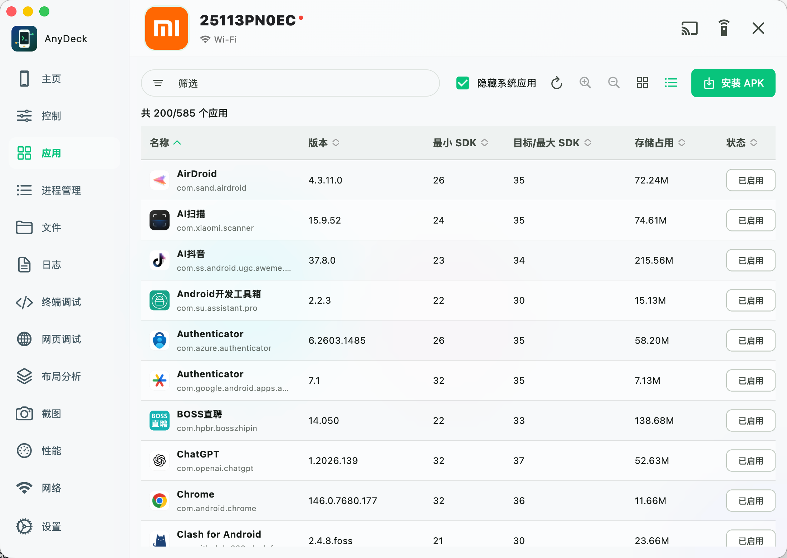
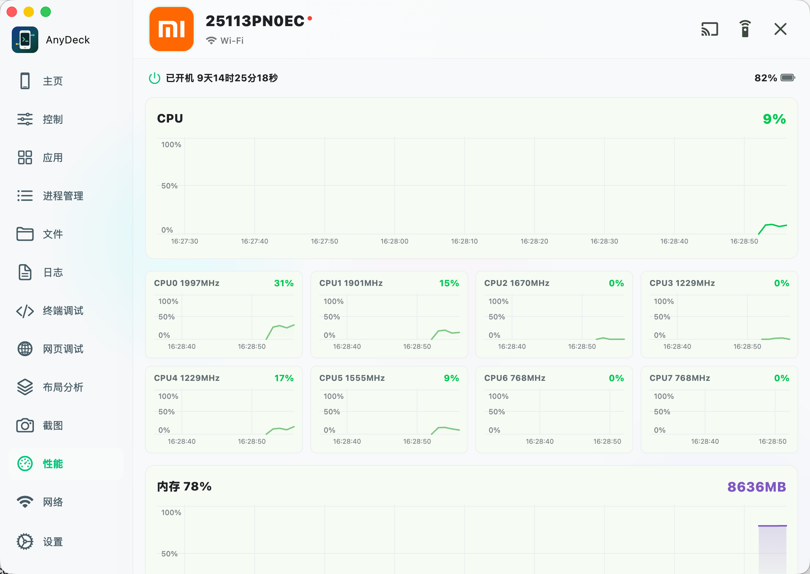
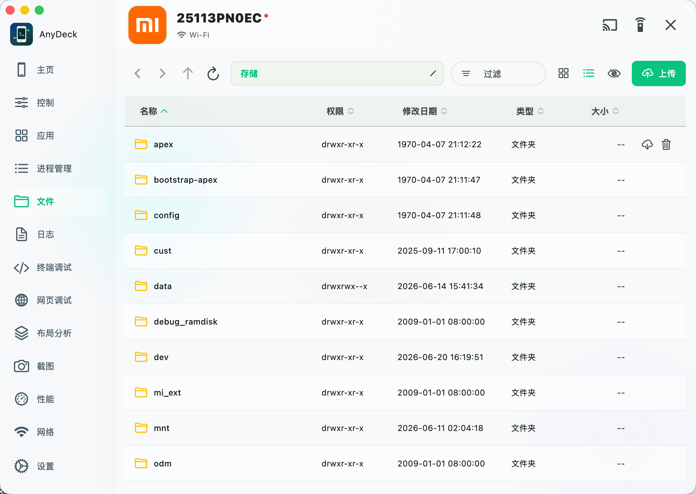

任何移动设备
Android、iOS 与 HarmonyOS，以统一入口接入。
AnyDeck 的含义
名称本身就是产品承诺：不被单一移动 OS 限制，也不让开发与测试工作散落在多个工具之间。
Android、iOS 与 HarmonyOS，以统一入口接入。
把连接、控制、诊断和自动化放在触手可及的位置。
常用能力，触手可及
围绕设备、画面、应用、文件与诊断组织常用能力，保留 CLI 的效率，也提供更直观的状态反馈。
自动发现 USB 设备，并支持 TCP/IP、二维码与配对码等无线连接方式。
低延迟画面、鼠标触控与键盘输入都在独立窗口完成。演示时可切换白板画笔，直接在电脑端画面上标记重点。
查看投屏白板指南 →检索、安装、卸载、清除数据、冻结、解冻及 APK 备份，覆盖常见维护动作。
过滤实时日志，并在多标签 ADB Shell 中复用命令历史与常用诊断命令。
将截图与 XML 节点树放在同一画布，支持矩形、圆形、画笔和马赛克编辑，完成后保存或复制图片。
查看截图编辑指南 →查看关键资源状态、进程与前台窗口，让现场问题保留更完整的上下文。
投屏白板
在 Android、HarmonyOS，或 macOS 版的 iPhone 投屏窗口点击画笔，鼠标就能在电脑端画面上划线、圈出重点。白板模式会暂停向手机发送画面操作，退出后继续控制设备。
笔迹只保存在当前投屏窗口；设备截图与录屏不会包含电脑端标注。
查看白板使用指南 →开发者工作台
统一管理三大平台模拟器，并深入查看本地 Android 安装包与已安装应用的关键结构信息。
自动扫描 Android AVD、DevEco Emulator 与 Xcode Simulator，集中查看状态、规格并执行启动、停止、冷启动和刷新。
macOS 支持离线分析 APK、APKS、AAB、XAPK，查看版本、SDK、ABI、组件、权限、DEX、证书和原生库，也可分析设备中的已安装应用。
APKS / XAPK 展示分包和扩展文件，AAB 展示模块信息；这三种格式仅供分析，普通 APK 可选择设备安装。
平台版本参考
快速核对 Android API 级别、HarmonyOS API 版本，以及 iOS 对应的 Xcode、SDK 与最低部署版本。
查看完整版本对照 →iOS 没有 Android 式 API 级别，应结合 SDK 与最低部署版本判断兼容性。
网络调试
为 Android 设备设置 HTTP 正向代理，并集中管理 Android / HarmonyOS 的正向端口映射与 Android 反向端口映射。
HTTP 代理仅支持 Android；正向映射支持 Android / HarmonyOS；反向映射当前支持 Android。所有映射均明确展示电脑端与设备端口。
查看代理与端口转发指南 →192.168.1.8:8888→互联网方向、平台和端口状态始终可见，删除规则前可再次核对目标设备。
运行控制台
控制台实时汇总 AnyDeck 主窗口与子窗口的运行日志、异常堆栈和 ADB / HDC 命令失败，让连接、投屏与工具调用的问题集中可查。
无需连接手机即可查看。控制台记录的是 AnyDeck 桌面 App 日志；手机系统与 App 日志请使用 Logcat。
查看控制台使用指南 →设备跟踪已启动 · Android / HarmonyOS / iOS视频会话已就绪 · 1080 × 2400ADB 命令重试 · 设备离线网络已变化 · 请求接收端重连会话已恢复 · 音频队列运行中AI × 真实设备
AnyDeck 内置 AI MCP 服务，把设备、界面、应用、日志、文件与受控命令行能力转化为标准 MCP 工具，供 AI 客户端直接调用。
http://127.0.0.1:8765/sseHTTP SSE默认本机监听 · 22 项 MCP 工具 · 工具级开关 · 高危命令拦截 · 调用审计
查看 AI MCP 接入指南 →take_screenshot · device_01200 · 284msiOS 无线投屏
在 macOS 版 AnyDeck 中启动 AirPlay 接收服务，即可从 iPhone 或 iPad 的“屏幕镜像”发送画面与设备音频，无需连接数据线。
手机与 Mac 需处于同一可互访局域网。当前 AirPlay 接收服务是仅支持 macOS 的实验性能力；受 DRM 保护的内容不在屏幕镜像兼容范围内。
查看 AirPlay 投屏指南 →视频投屏
支持 Android 与 HarmonyOS 手机通过 DLNA，将抖音、哔哩哔哩、小红书、爱奇艺等 App 中的视频投到电脑播放。
手机与电脑需处于同一局域网。实际可投内容取决于 App 版本、片源协议与 DRM 限制；弹幕不会随视频传输。
查看视频投屏指南 →更短的联调路径
不改变 Android 原生调试链路，只把环境检查、设备状态与高频操作组织得更顺手。
安装 ADB，并按设备类型准备 HDC 或 go-ios。内嵌投屏无需另外安装 scrcpy。
使用 USB 或无线方式连接设备，在手机端接受调试授权后即可被识别。
进入投屏、应用、文件、日志或布局分析，无需重复拼接常用命令。
真实产品 · 真实界面
截图来自 AnyDeck 当前项目，展示设备概览、应用管理与实时性能视图。


